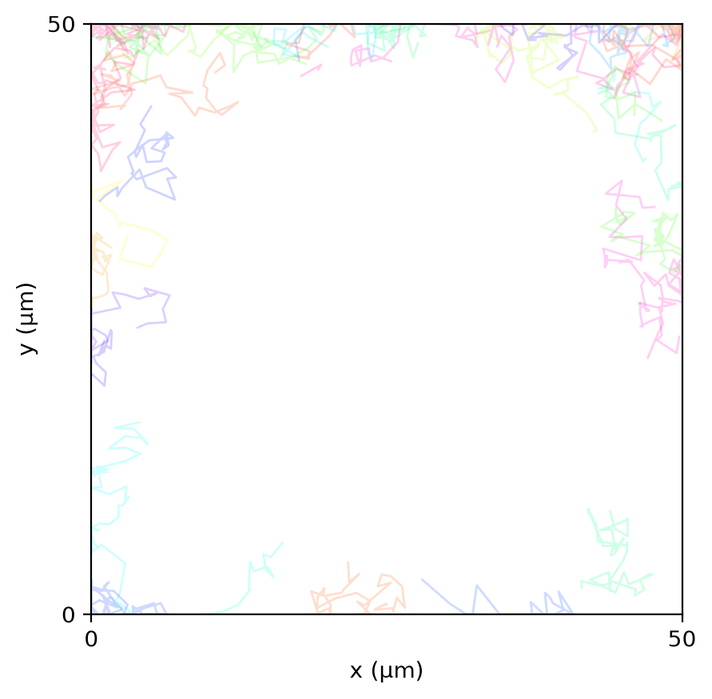

About / Overview
Explore the Spatio–Flux test suite
This page is a catalog of executable compositions built with the Process Bigraph protocol. Each entry below is a self-contained simulation that demonstrates how distinct modeling concerns—metabolism, spatial transport, particle dynamics, and structural change—can be composed through explicit interfaces and shared state.
Rather than presenting biological conclusions, the goal of this test suite is to make model structure visible and inspectable. Clicking into a simulation lets you see how it is built: which processes are present, how they are wired to state, and how different process families combine to form more complex behaviors.
Bigraph structure
Inspect a rendered process–bigraph showing state variables, processes, and their read/write dependencies.
Interactive state
Browse serialized state trees to explore spatial fields, particles, and intermediate variables.
Dynamics & behavior
View plots and animations illustrating spatial gradients, particle motion, growth, and division.
Composition documents
Download the machine-readable process–bigraph documents that define each simulation.
Scroll down to explore individual compositions, or use the Contents section to jump to a simulation.
Spatio–Flux process families
Think of these as lego bricks for multiscale simulation. Each family does one thing well—metabolism, transport, motion, coupling, or structural change— and complex behaviors emerge by composing families rather than extending any single process.
| Family | Color | Processes | Role |
|---|---|---|---|
|
Metabolic processes
|
Metabolism | DynamicFBA MonodKinetics SpatialDFBA |
Turns nutrients into growth. Computes uptake, secretion, and biomass production either at individual sites or across spatial grids by operating on substrate fields and biomass variables. |
|
Field transport
|
Transport | DiffusionAdvection |
Makes space matter. Updates dissolved species fields via diffusion and advection, so local metabolic activity can influence distant regions over time. |
|
Particle movement
|
Movement | BrownianMovement PymunkParticleMovement |
Moves agents through continuous space. Brownian motion provides stochastic movement; Newtonian motion adds mass, velocity, inertia, friction, and elastic interactions. |
|
Particle–field coupling
|
Coupling | ParticleExchange |
Bridges discrete and continuous. Mediates bidirectional exchange between particle-local state and spatial fields, syncing internal particle chemistry with nearby lattice values. |
|
Structural and boundary processes
|
Rewrite | ParticleDivision ManageBoundaries |
Changes the population. Rewrites the particle store by creating, removing, or relocating particles in response to conditions like growth thresholds or boundary crossings. |
Vivarium 2.0 ecosystem
Spatio–Flux is a reference application in the Vivarium 2.0 software suite: an open-source ecosystem for building, executing, and visualizing Process–Bigraph compositions.
bigraph-schema— Defines a compositional type system and hierarchical data structures using JSON-based schemas. Provides the type engine, schema compilation, state validation, and type-specific update operators used in process–bigraph delta semantics.process-bigraph— The dynamic core. Defines typed Process and Composite abstractions, event scheduling, global time management, and orchestration logic for executing process–bigraph documents.bigraph-viz— Parses process–bigraph documents and renders their structure as inspectable graphs.spatio-flux— A domain-specific application repository implementing concrete process families for metabolism, spatial fields, particle dynamics, and particle–field coupling, with an extended test suite of executable compositions.
References
How to read the bigraph visualization
Each diagram is a map of a composite simulation: what state exists, what processes run, and how data flows between them.
1) Nodes
Circles are state (variables or structured stores). Boxes are processes (update rules that run on a schedule).
2) Edges
Edges show read/write dependency: a process reads state to compute updates, and writes deltas back into state.
3) Hierarchy
Big nodes often contain nested nodes. That nesting reflects the hierarchical state tree (e.g., collections, sub-stores, or typed substructures).
4) A quick way to scan
Start by locating the main stores (large circles), then follow edges into the processes that touch them. The “story” is the loop: state → process → state.
Tip: If a diagram feels busy, focus on one store (fields or particles), then trace only the processes connected to it. The report sections below let you compare structure (bigraph), serialized state (JSON viewer), and behavior (plots/GIFs) side-by-side.
monod_kinetics
Monod uptake and growth kinetics on a well-mixed pool of glucose and acetate — the simplest field-only metabolism model, with no spatial lattice or particles.
Runtime: 0.051s (process: 0.007s, framework: 0.044s)
monod_kinetics_state.json
View full JSONmonod_kinetics_viz.png

monod_kinetics.png

ecoli_core_dfba
Dynamic FBA of a single E. coli core cell in a well-mixed medium, tracking extracellular glucose and acetate as biomass grows — the simplest single-cell metabolism model, with no space or particles.
Runtime: 0.083s (process: 0.067s, framework: 0.015s)
ecoli_core_dfba_state.json
View full JSONecoli_core_dfba_viz.png

ecoli_core_dfba.png

ecoli_dfba
Dynamic FBA of a single E. coli cell using the genome-scale iAF1260 model, tracking extracellular glucose and formate as biomass grows in a well-mixed medium.
Runtime: 2.241s (process: 2.223s, framework: 0.018s)
ecoli_dfba_state.json
View full JSONecoli_dfba_viz.png

ecoli_dfba.png

yeast_dfba
Dynamic FBA of a single yeast cell using the genome-scale iMM904 model, tracking extracellular glucose as biomass grows in a well-mixed medium.
Runtime: 1.712s (process: 1.694s, framework: 0.018s)
yeast_dfba_state.json
View full JSONyeast_dfba_viz.png

yeast_dfba.png

diffusion_process
Finite-volume diffusion and advection of solute fields on a 2D lattice — glucose diffuses while a seeded band of dissolved biomass diffuses and advects — the field-transport building block underlying the spatial composites.
Runtime: 0.042s (process: 0.031s, framework: 0.012s)
diffusion_process_state.json
View full JSONdiffusion_process_viz.png

diffusion_process_video.gif

brownian_particles
Brownian motion of mass-carrying agents in continuous space — the particle-only building block, with no fields or metabolism.
Runtime: 0.137s (process: 0.047s, framework: 0.090s)
brownian_particles_state.json
View full JSONbrownian_particles_viz.png

brownian_particles_mass.png

brownian_particles_particles_traces.png

brownian_particles_snapshots.png

brownian_particles_video.gif

newtonian_particles
Rigid-body particles under gravity that collide and crowd in continuous space via a Pymunk physics engine — the mechanics-only building block, with no fields or metabolism.
Runtime: 0.103s (process: 0.076s, framework: 0.028s)
newtonian_particles_state.json
View full JSONnewtonian_particles_viz.png

newtonian_particles_mass.png

newtonian_particles_particles_traces.png

newtonian_particles_video.gif

community_dfba
A well-mixed microbial community where several dFBA species and a Monod-kinetic population share the same extracellular substrate pools, producing competition and cross-feeding without spatial structure.
Runtime: 8.074s (process: 8.037s, framework: 0.037s)
community_dfba_state.json
View full JSONcommunity_dfba_viz.png

community_dfba.png

dfba_kinetics_community
A well-mixed community pairing a dFBA population with a Monod-kinetic population that share the same extracellular glucose and acetate pools, coupling two metabolic modeling styles in one environment.
Runtime: 0.069s (process: 0.051s, framework: 0.018s)
dfba_kinetics_community_state.json
View full JSONdfba_kinetics_community_viz.png

dfba_kinetics_community.png

spatial_many_dfba
A spatial microenvironment where every lattice site runs its own dFBA instance over local glucose, acetate, and dissolved biomass, resolving metabolism site by site across the grid.
Runtime: 0.497s (process: 0.458s, framework: 0.039s)
spatial_many_dfba_state.json
View full JSONspatial_many_dfba_viz.png

spatial_many_dfba_timeseries.png

spatial_many_dfba_video.gif

spatial_dfba_process
A spatial microenvironment where a single vectorized dFBA process updates every lattice site at once, with six microbial species arranged in rows across a horizontal glucose gradient.
Runtime: 38.181s (process: 38.160s, framework: 0.020s)
spatial_dfba_process_state.json
View full JSONspatial_dfba_process_viz.png

spatial_dfba_process_model_grid.png

spatial_dfba_process_timeseries.png

spatial_dfba_process_video.gif

comets_diffusion
The classic COMETS field-only scenario: per-site dFBA on a lattice coupled to advection–diffusion of glucose, acetate, and dissolved biomass, with biomass seeded at the top edge.
Runtime: 5.840s (process: 5.566s, framework: 0.273s)
comets_diffusion_state.json
View full JSONcomets_diffusion_viz.png

comets_diffusion_snapshots.png

comets_diffusion_timeseries.png

comets_diffusion_video.gif

br_particles_kinetics
Brownian agents diffuse through a lattice of glucose and acetate, taking up substrate by Monod kinetics so that exchange updates both particle mass and the local fields, with agents dividing once they cross a mass threshold.
Runtime: 0.192s (process: 0.085s, framework: 0.107s)
br_particles_kinetics_state.json
View full JSONbr_particles_kinetics_viz.png

br_particles_kinetics_mass.png

br_particles_kinetics_particles_traces.png

br_particles_kinetics_snapshots.png

br_particles_kinetics_video.gif

br_particles_dfba
Brownian agents each run an internal dFBA model, exchanging glucose and acetate with the surrounding fields so that metabolic biomass accumulates as particle mass and drives division, over a vertical glucose gradient.
Runtime: 2.810s (process: 1.396s, framework: 1.413s)
br_particles_dfba_state.json
View full JSONbr_particles_dfba_viz.png

br_particles_dfba_mass.png

br_particles_dfba_particles_traces.png

br_particles_dfba_snapshots.png

br_particles_dfba_video.gif

comets_br_particles_kinetics
A COMETS-style scenario coupling lattice dFBA fields, advection–diffusion, and Brownian agents that run Monod kinetics against local concentrations, exchanging substrate with the fields and dividing at a mass threshold.
Runtime: 14.681s (process: 13.259s, framework: 1.422s)
comets_br_particles_kinetics_state.json
View full JSONcomets_br_particles_kinetics_viz.png

comets_br_particles_kinetics_mass.png

comets_br_particles_kinetics_snapshots.png

comets_br_particles_kinetics_timeseries.png

comets_br_particles_kinetics_video.gif

comets_br_particles_dfba
The full COMETS-style composite: per-site lattice dFBA and advection–diffusion of substrates coupled to Brownian particles that each run an internal dFBA model, exchange with the fields, and divide as biomass accumulates.
Runtime: 24.274s (process: 14.972s, framework: 9.302s)
comets_br_particles_dfba_state.json
View full JSONcomets_br_particles_dfba_viz.png

comets_br_particles_dfba_mass.png

comets_br_particles_dfba_snapshots.png

comets_br_particles_dfba_timeseries.png

comets_br_particles_dfba_video.gif

comets_nt_particles_dfba
Pymunk rigid-body particles that collide and settle under gravity while COMETS fields diffuse and a lattice kinetics process consumes substrate; each particle runs an internal dFBA model, exchanging with the local fields and dividing as it grows.
Runtime: 2.846s (process: 0.542s, framework: 2.304s)
comets_nt_particles_dfba_state.json
View full JSONcomets_nt_particles_dfba_viz.png

comets_nt_particles_dfba_mass.png

comets_nt_particles_dfba_mass_submasses.png

comets_nt_particles_dfba_snapshots.png

comets_nt_particles_dfba_timeseries.png

comets_nt_particles_dfba_video.gif

spatioflux_reference_demo
The flagship SpatioFlux reference model: Newtonian particles, each carrying a two-strain E. coli community with its own internal dFBA, swim through diffusing glucose and acetate fields, exchange substrate locally, and divide by splitting sub-masses between daughters.
Runtime: 0.919s (process: 0.345s, framework: 0.574s)
spatioflux_reference_demo_state.json
View full JSONspatioflux_reference_demo_viz.png

spatioflux_reference_demo_mass.png

spatioflux_reference_demo_mass_submasses.png

spatioflux_reference_demo_snapshots.png

spatioflux_reference_demo_timeseries.png

spatioflux_reference_demo_video.gif

reference_demo_x2y2
The SpatioFlux reference model on a finer field lattice with doubled bin counts in x and y: the same Newtonian particles carrying a two-strain internal-dFBA community, with local substrate exchange, diffusing glucose/acetate fields, and sub-mass-splitting division.
Runtime: 5.945s (process: 0.985s, framework: 4.960s)
reference_demo_x2y2_state.json
View full JSONreference_demo_x2y2_viz.png

reference_demo_x2y2_mass.png

reference_demo_x2y2_mass_submasses.png

reference_demo_x2y2_snapshots.png

reference_demo_x2y2_timeseries.png

reference_demo_x2y2_video.gif

Total Simulation Time
108.697 seconds